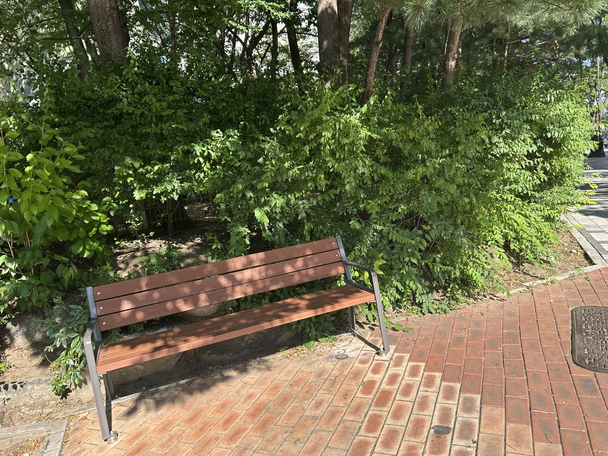
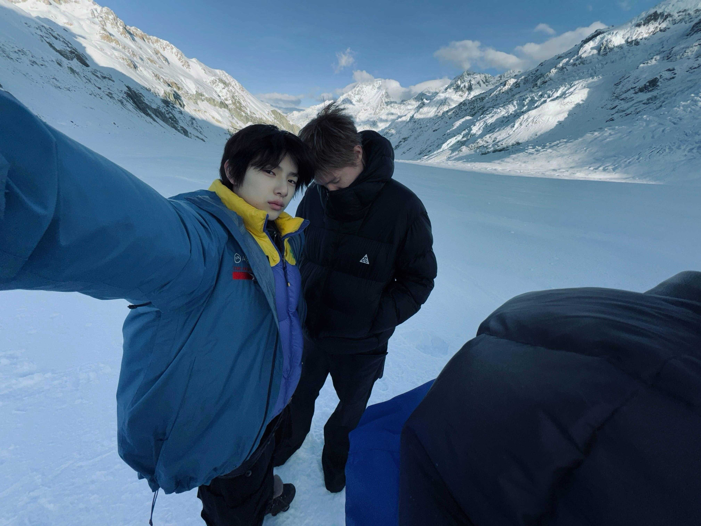
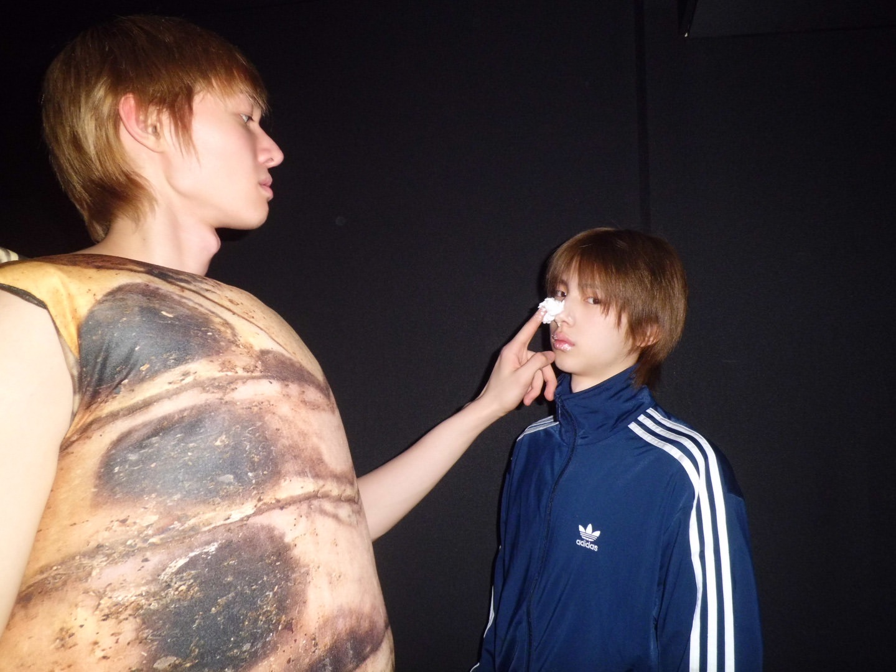
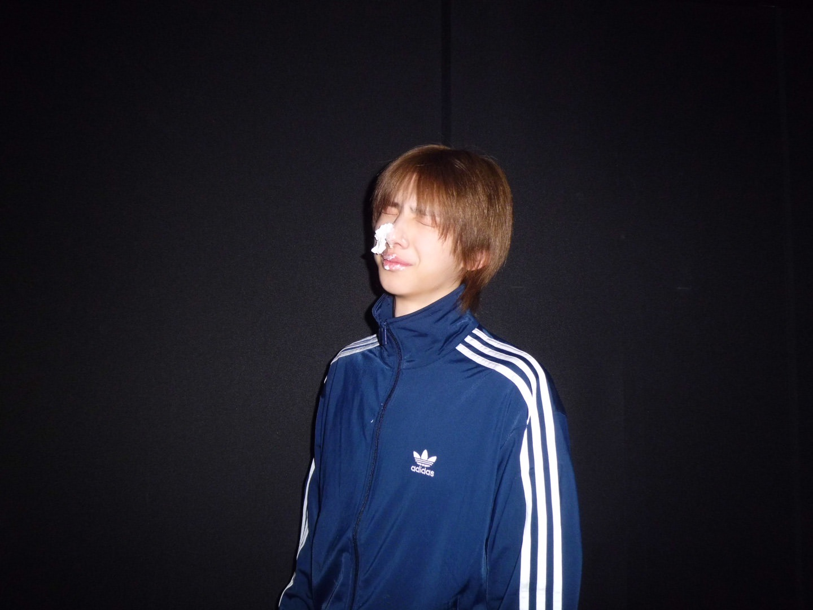
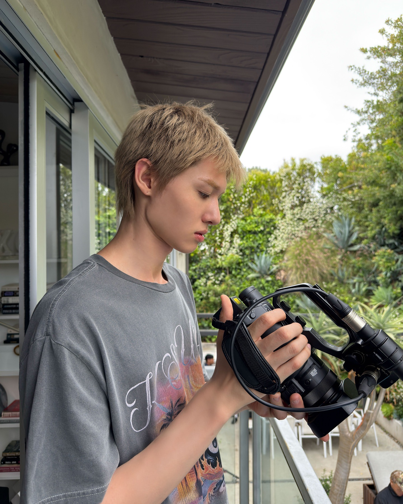
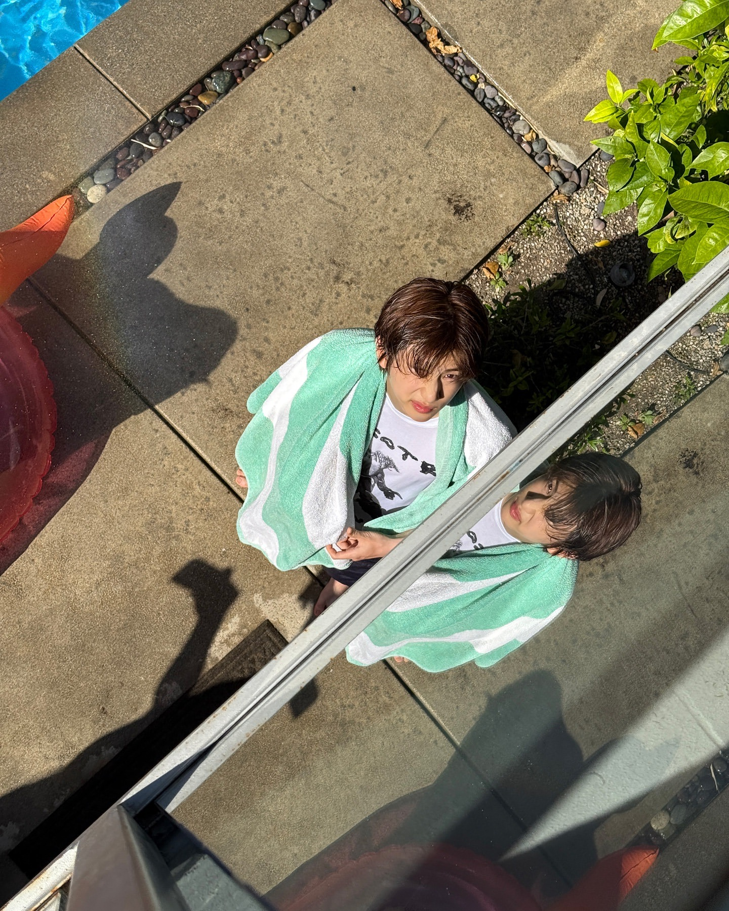
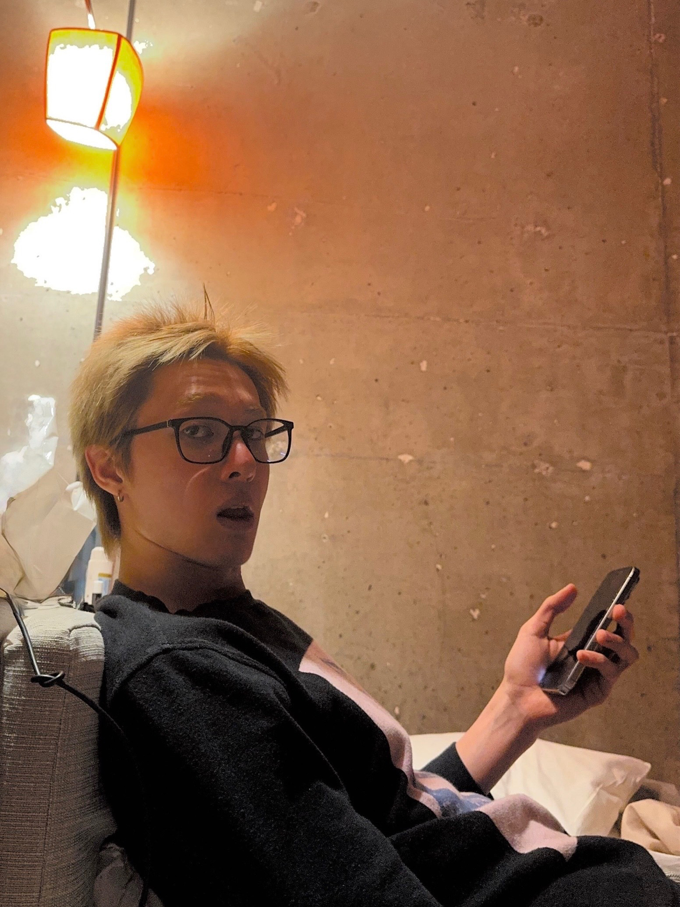
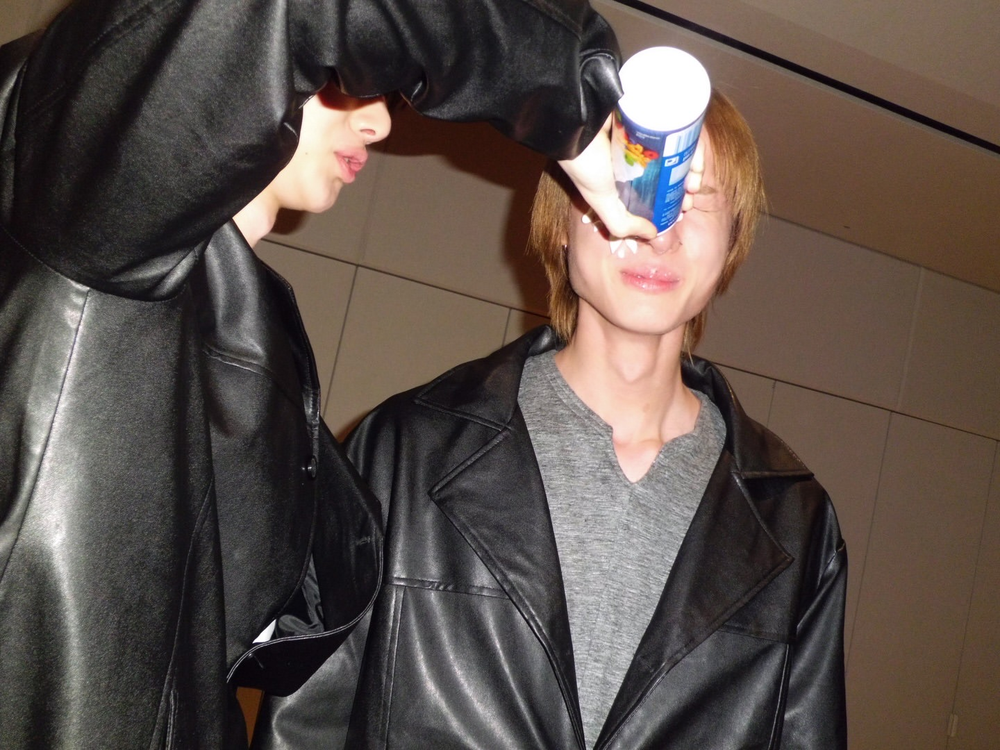
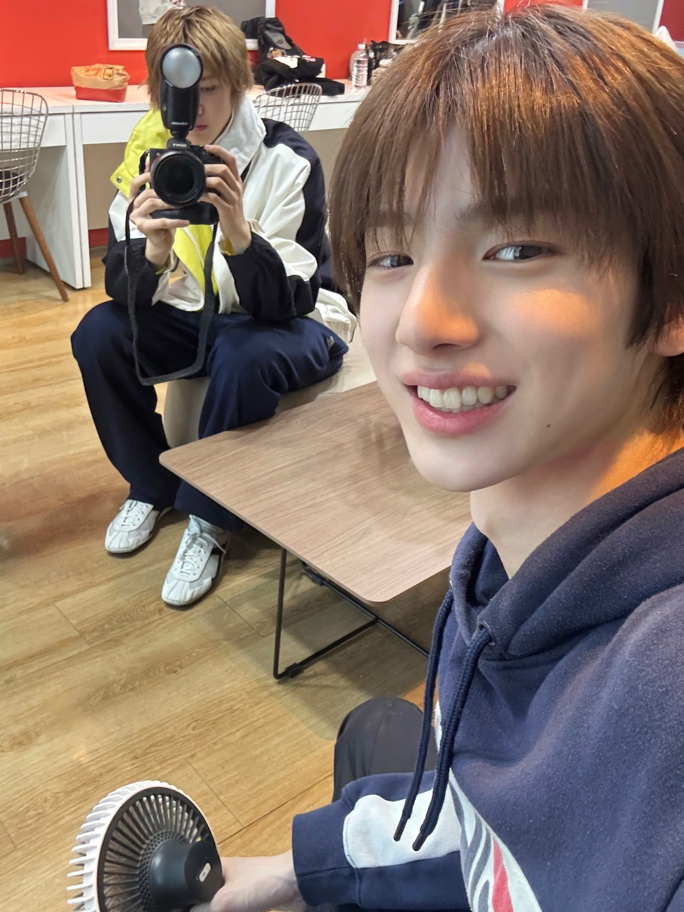
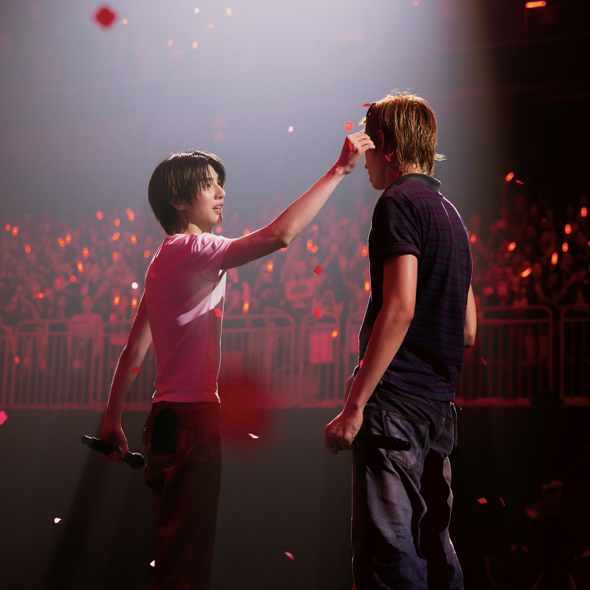

今天的地下室里，只有马丁一个人在。新歌的导唱怎么录都觉得不满意，重来了一遍又一遍，似乎是故意保留瑕疵，这样就可以借着本就随意至上的即兴词，大声吐出憋闷的心情。
背对背的时空里，金主训对着没有姓名的联系人，在对话框中粘帖了一段网址，按下发送。
管理局系统立刻扫瞄到敏感信息，自动完成了一次拦截。
然而消息依旧在马丁的余光里弹出，起初他扫到陌生号码，以为是广告，根本没打算理会。手指却不由分说地脱离意志，下一秒他又已经在对着短信里的一串乱码发愣……一番倒腾后，他破译出这串乱码实则是个网址，粘帖到电脑上打开，登录窗口里有自动记忆过的账号和密码，但他无论怎么按回车键，界面都只是一个劲地报错。
在论坛里搜索到这个报错的含义，他按照教学，摁了一串如果让他记住足以引发头疼的指令。网站维护记录被打开，在一堆看起来堪称是程序员修复代码的流水帐中，他抓取到了疑似是登录刚刚那个网站的账号密码。他记下这个账密，回到主界面。登录成功后，右上角赫然标注着他是管理员。
原来这些搞技术的人，还喜欢在代码里说悄悄话，完事儿了还要署名，难道维修网页也有版权费吗？马丁在登录成功后，对和电脑打交道的人留下了这样戏谑的印象。
他在这位管理员的工作记录里，找到了一些已经归档的文件。因为管理员幽默的修复日志而稍显放松的神经，很快就被随之而来的内容堵住呼吸。
因为相遇导致时空错乱？记忆清除程序执行完毕？这些单看像科幻小说设定一样的语句，自己的名字却在其中成为了主宾语。尤其是抹除记忆的被执行对象后面，也紧跟着自己的名字。僵直的脊柱上不知道从哪里多出来一条蛇，沿着棘突一节节爬过，寒意从整个后背扩散至全身。
马丁不由地撑住扶手，转身向后环顾，警惕地打量着周围。闪回是从这一秒开始劈中他的。
曾经也是这个角度，他回头发现有人正在摄录他工作的模样，因为距离太近，他还笑着让那人后退一点。突如其来的回忆令他动作变慢，生怕肢体的幅度惊扰有概率就要浮现的记忆。
缓缓摘下耳机后捏在手里，却莫名觉得，这只手正在想念一个后脑勺的形状。还没来得及对自己的手拥有独立意志，感到不可思议。这只手又想起另一个手，它想念的那只手，小了他半个指节，但总是冰凉着，喜欢爬进它掌心取暖。
而这些徒留了一个印象，没有形状的人，似乎都共享同一个影子。
影子竟然有触感、有气味、有重量，没有实体的东西在注视他，不开口，却叫嚣着让他想起。不对吧，这么不像话的事情，阴森得简直见了鬼。马丁摔上地下室门的时候，打算把这些天来所有怪异的感觉封在里面。
走进夜晚的风，回到路灯下，地面上印着因为自己动作而变化的浓浓黑影。对啊，这才是影子，有本体，有光源。想把所有的模糊抛在脑后，从鼓胀的胸膛里换出一口长长的气，他没有方向地随处走着。
期间，有一个人和他擦肩时，携带了一种令他条件反射就伸手要牵住的味道，已经转过的身体，抬起来想要抓住什么的手，在无法呼喊出对方名字的那一瞬间停在半空。把大脑勒到记忆都变空白的皮带，转移至脖颈，收到令喉咙发不出声响的力度。他喊不出那个名字。
一时间不知道走到哪里，马丁拦下一辆出租回家。车速把夜里的灯光拉出光柱。马丁像是坐进胶片仓内，起初大脑里的转轴还有些卡顿，回想起的画面略有斑驳。随着车行驶至高速，记忆也在某一瞬间纷至沓来。有关他和金主训的所有，全都从大脑深处，清晰、快速地回卷至存储记忆的暗盒。
金主训，是金主训，几乎忘记的那个人，是金主训。
此后的两天，马丁忙于在各处搜集他们相爱的证据。他不止一次感到这样的现实难以承受，说实话，他宁愿自己找不到任何蛛丝马迹，以确保这是一场明天睡醒后，荒唐会不攻自破，心痛也不复存在的梦。
只是，在无数音乐demo里，关键词写着with jju、for jju的事实无从更改，就连走回他们相遇的那个公园，心脏也跳出了和初见金主训那天一样的频率。明明祈祷是在虚空里探险，爱过的痕迹反过来蹭得他鼻头眼角一脸灰。
要去找到金主训的冲动一天比一天强烈，而那条短信作为唯一的线索，再也没有回复消息。在等待的时间里，他走进和金主训再次相爱的幻想，来到出口又恍然想起，他们也许还会走到那个可怖的终点。假如下一次他没有这么幸运，再也无法回忆起来，那失去不就成了比死亡都先到来的永远。难道真的没有什么办法？难道这只能是死局？
一同承受思考的，还有已经被啃烂的大拇指，直到这一下咬痛，马丁才倒吸了一口气回神。一筹莫展之际，他对发短信之人的好奇，转移到内容本身。他再次把网址贴进电脑，找到了管理员的账密。
无从知道这个网站到底潜伏着什么，马丁耐着性子读完所有工作指导手册，谜底呼之欲出。
原来，时空管理局内部存在一条针对他们这种情况的合法申诉。因为相遇引起时空错乱的双方，可以通过签署「自愿承担时空责任声明书」，申请将这段关系登记为稳定例外。得到认定后，他们就会从监测名单里退出，不再被强制抹除记忆。然而，指导内容中也明确写到，‘本条款自设立以来，成功申请案例极少。’因为，该声明填写要求十分之高，除了要求当事人同时填写双方正确的名字，也要求当事人在附加材料里，详述两人相处细节。
因此，对所有管理员来说，执行记忆清除都是最简单的处理方式。时间一久，工作中不谋而合的共识，超越规章条例，使这种方法成为了此类情境的第一处理原则。
底部下载文件的按钮比正文浅了好几个度，光标停在上面等待一个决心。
冲出家门，跑了两个打印店才找到还在营业的，怕一张单薄的纸被揉出褶皱，马丁又问店里要来一个文件夹，轻轻的放进去后，带着飞快跑回了家。这种不可一世的速度，这种拒绝一切推迟的速度。一切等待都被卷进来，金主训也许已经提交申请后在等待，如果他没有提交，马丁就要面对所有等待。不管怎样，所有的等待都要在立刻行动的速度里被烧毁。
当笔尖真正悬在白纸上方，却迟迟不见马丁动笔。在最接近幸福的那一刻，马丁害怕任何一个细小的错误，都会被收回幸福的资格。比如，第一个字他就多写了一横，还在发抖的手为了矫正，又把两笔补为一笔，黑色的墨迹越描越粗。
和金主训的相遇，是在南公园。那天我只是想出门放松一下，在文字里找点写歌的灵感。读的好好的，他突然就坐在我旁边 
我们好像都被吓到了，对视的时候为了掩饰尴尬，就开始说话。聊了一会儿之后，我就放心了，鬼不可能跟我那么聊得来。后来我们在一起，我真的好寂寞。因为根本没有人能懂，和金主训谈恋爱 
金主训不是那种会天天主动表达爱的类型，我经常闹着要他说，不管我怎么闹，不管我一天闹几次，只要我想听，他每次都会认真地看着我，说一句爱我    
我经常对很多事情感到不满、厌恶，是他沉默但无处不在的陪伴，让这些小小的日常浪漫   
如果不是金主训，我都不知道我还会爱上他 
所以你问维系关系的意愿吗？没有那样的东西。爱他是神的指引，是主的训诫，是我的注定。我这个人，我这条命，就这么一个注定。如果相忘一定要掺杂在这注定之中，那想起他，找到他，也在其中。